Айдар-Арнасой кўли
Айдар - Арнасой кўллари тизими - Жиззах ва Навоий вилоятлари ҳудудидаги оқмас кўллар бўлиб, Қизилқум чўли шарқи Қозоғистон Республикасининг Чордара сув омборидан жануби-ғарбда жойлашган Айдаркўл, Тузкон ва Шарқий Арнасой кўлларини ўз ичига олади. Бугунги кунда Айдаркўлнинг умумий майдони 4 минг квадрат километрга тенг. Кўлнинг узунлиги 159 километр, эни 26 километрни ташкил қилади.
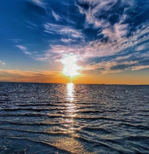 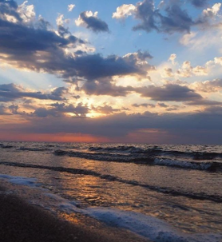 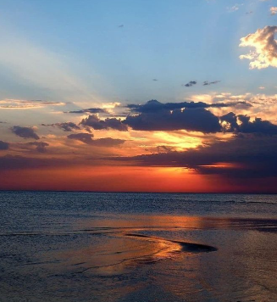 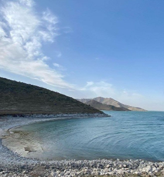 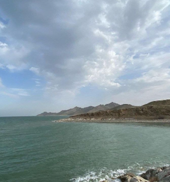Зомин-Ўзбек Швейцарияси
Ажойиб ландшафтлар ва тоза тоғ ҳавоси, флора ва фаунанинг хилма-хиллиги, қадимий зиёратгоҳлар ва ноёб миллий сиҳатгоҳ — буларнинг барчаси Зомин.
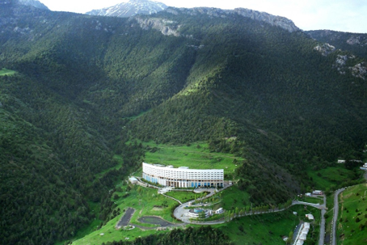 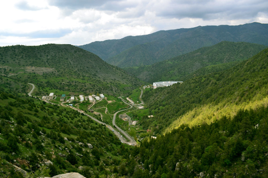 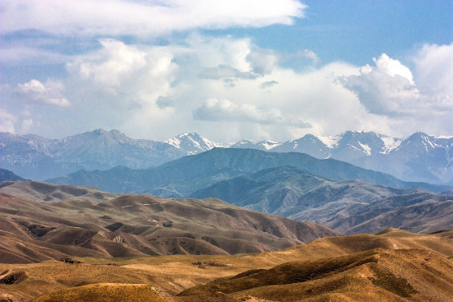 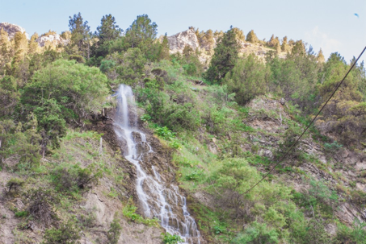Фориш туманидаги “Ўхум” маҳалласи
Фориш туманидаги “Ўхум” маҳалласи бугун туризм маҳалласига айланиб бормоқда. “Ўхум” маҳалласининг тоза ҳавоси, тоғ булоқларидан жилдираб оқаётган зилол сувлари нафақат маҳаллий сайёҳларни балки, дунёнинг мана ман деган ривожланган давлатлари – АҚШ, Буюк Британия, Германия, Канада, Россия, Қозоғистон сингари ўлкалардан келаётган экотуризм ихлосмандлари диққатини ўзига тортмоқда. “Ўхум” маҳалласига келиб кетган ҳар қандай киши бу ерга яна бир борсам деб ният қилади.
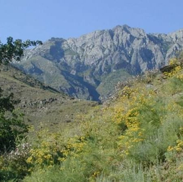 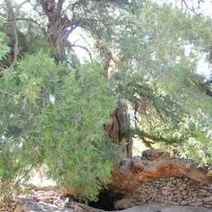